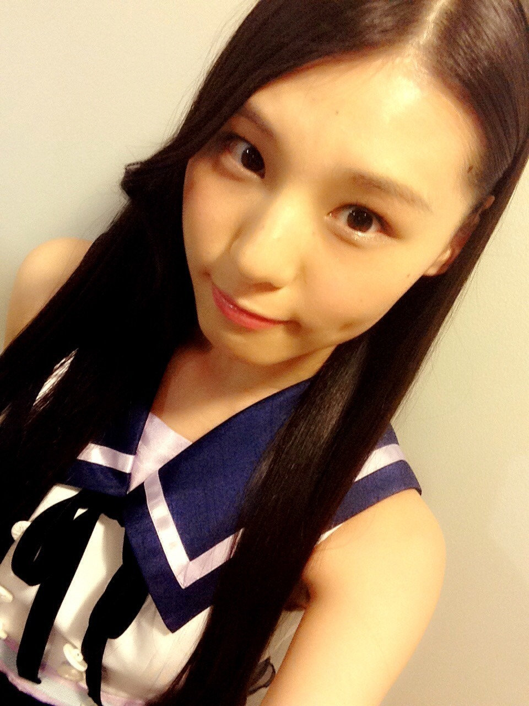
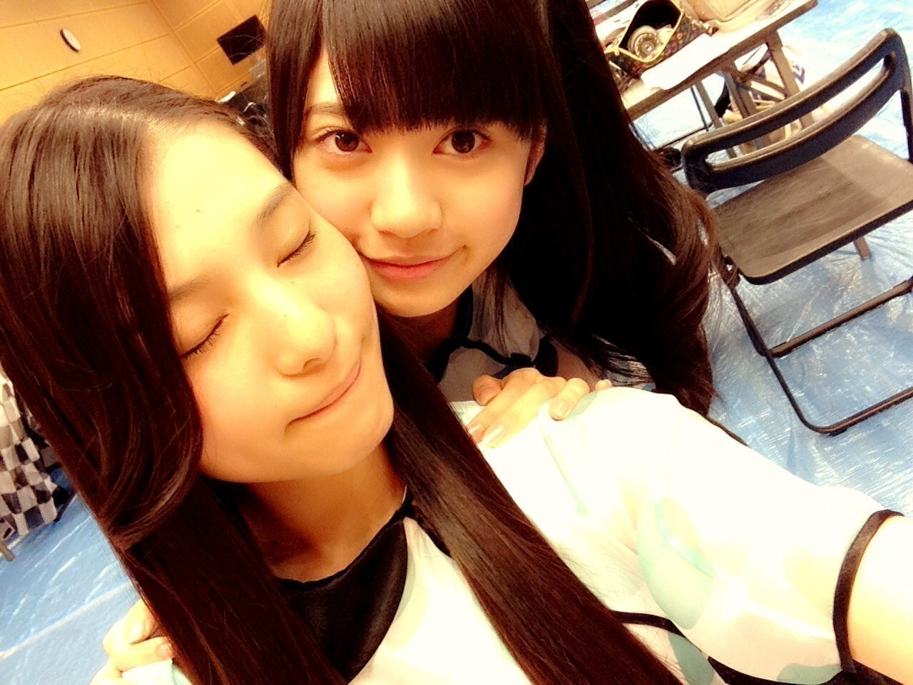
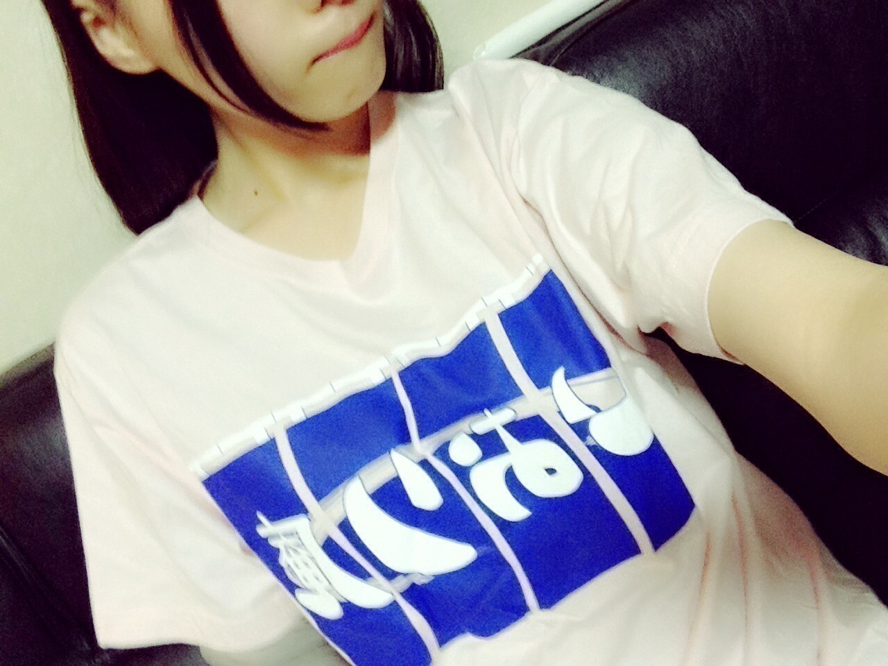
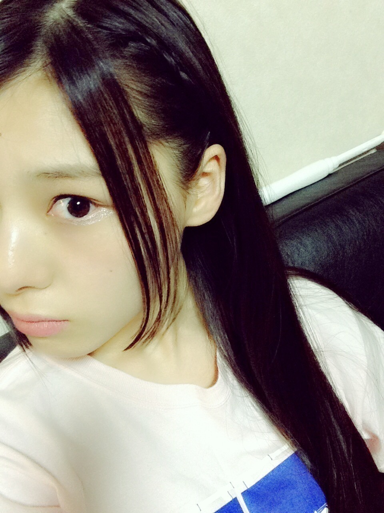
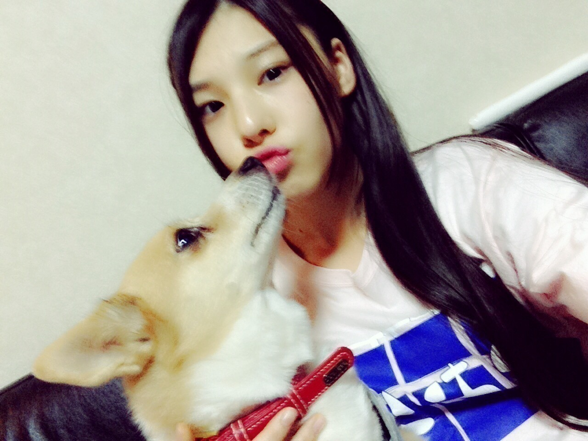
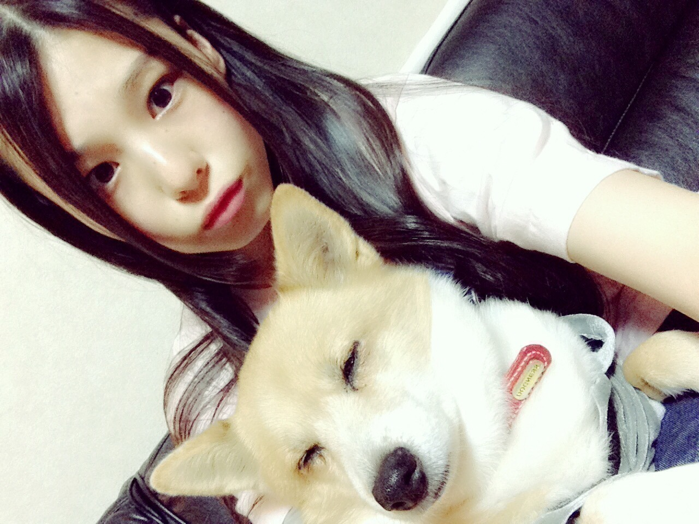
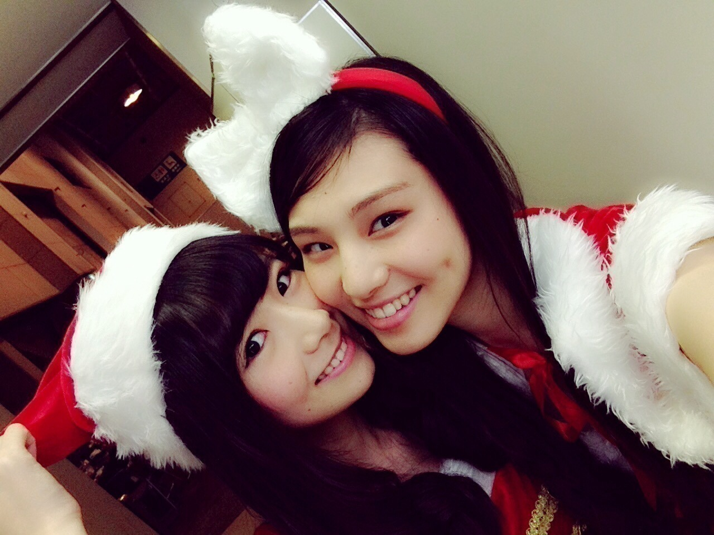
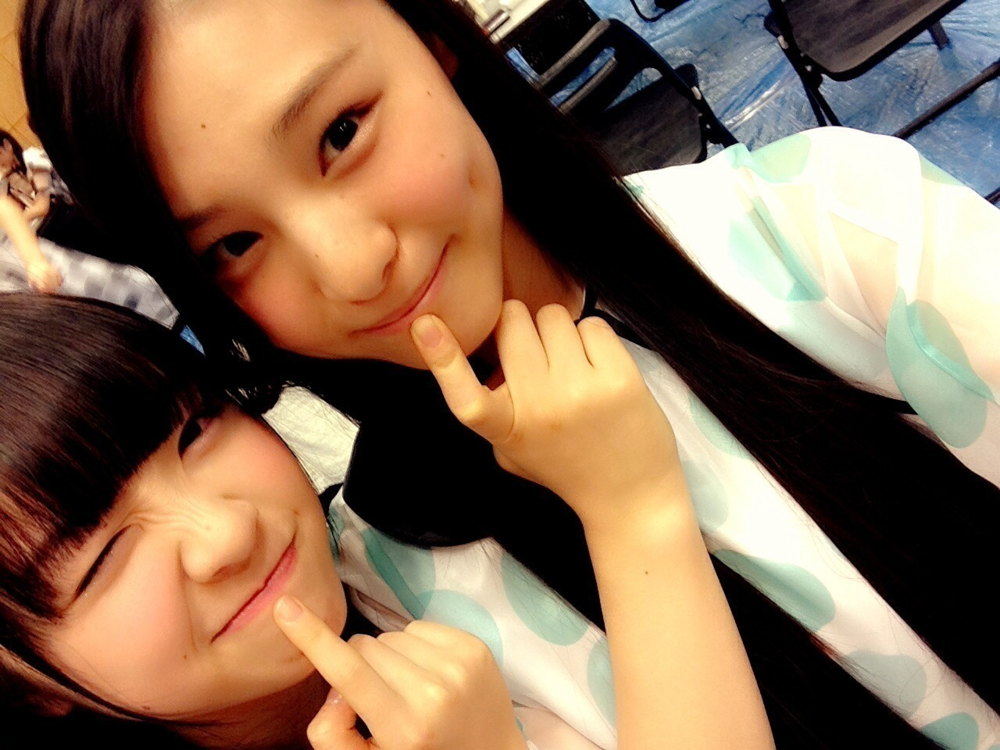
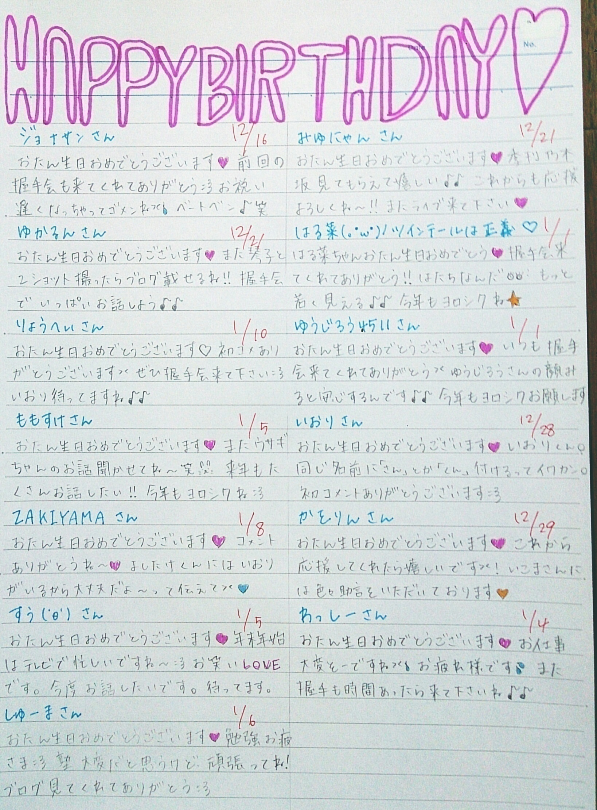
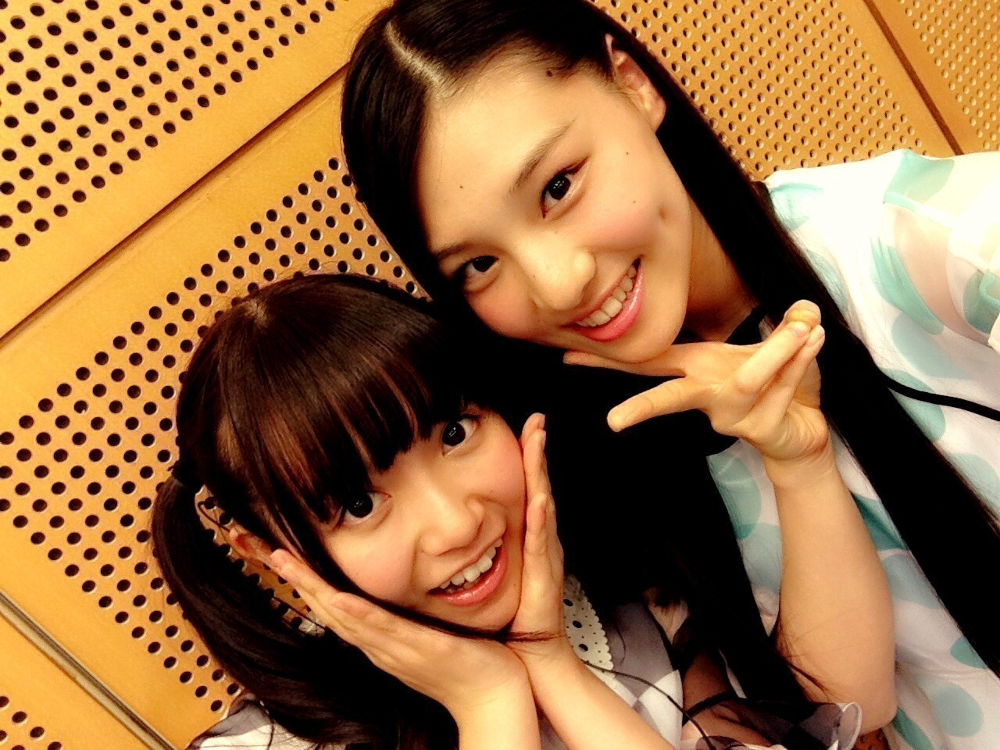

| 2015/01 03 Sat | (*いおり_(．．*)vol.20) |
みなさん
あけましておめでとうございまーす！
高校2年生17歳
さがらいおりです！

大感謝祭来て下さった方
ありがとうございました！！
いおりは 11 月生まれだったので
11 月のMCを担当しました～
MCって言えるほど仕切ってなかったんですけど、
蘭世のMCがいおりの中でとっても
ツボでした：）

去年の12/28の京都握手会
1 部の写真なくて、、ごめんね
巻きポニーだったよ！
2 部は
生誕Ｔ着ました～

髪型はリクエストがあったから
編み込み巻きおろし

あんま分からないかな、、
写真撮る時間なかったから
おうち帰って撮ったの
ひまちゃん写りたがり～♡

と思ったら

寝ちゃった♡
もう歳だから許してあげて♡
それでね、
今年最後の握手会で、
あ！生誕Ｔ着てない！
と思って持って行ったら
ひなこに今年最後でしかも関東じゃないのに
それ着るの？
って言われて
あ、、、、
ってなったんだけど、もう新幹線で遅かった( / _ ; )
なんか、すみませんでした。

大掃除しました！！
スゴイきれいになりました♪♪
個人的には満足だからOK；）
年末年始のお笑い番組
見たのはこれで、↓
検索ちゃん
とんねるずのみなさんのおかげでした
にんげんだもの
ロンドンハーツ
ガキ使
おもしろ荘(なでしこルーム)
アメトーーク 5 H SP
年忘れ！お笑いオーケストラ
録ってあるけど見てないのがこれ↓
ミレニアムズ
オールザッツ漫才
よしもと大宮芸人大集合！
めちゃイケ！ドリーム東西ネタ合戦
爆笑ヒットパレード２０１５
ウンナン極限バトル！～イロモネアへの道～
リアルタイムで見たのは
ガキ使とおもしろ荘くらいかな、
あとは全部録画して見ました～
おもしろ荘の
尼神インターさんが面白かったです♡
あと、最近のおすすめの芸人さんは？
って聞かれることあるんですけど
いおり的にオススメなだけなので、、( ¯﹀¯ )
ちなみに
今ハマっているのは
コマンダンテさん
オードリーさん
アキナさん
かまいたちさん
の動画よく見てる♡
ずっと好きなのは変わらず
ウーマンさんとNON STYLEさんと
サンドさんだからね♡
あとLLRさんも！！
あ！お年玉もらいました♡
もらったその日にお買い物行ってきました♡
半分くらいは貯金しておこうと思います(。･o･｡)ﾉ

こっちがみりりんぬでこっちがいおりんぬ
~いおり庵~
 伊織ちゃんはお年玉もらったら何が欲しいの？
伊織ちゃんはお年玉もらったら何が欲しいの？
もう全部買っちゃいました。
そもそも物欲があまり無い、
えへ(∩´∀`∩)
2015年の目標は何？
んー、お仕事をたくさん
出来るようにしたいのと、
お笑いに詳しくなること！
バナナマンさんのラジオは聞かないの？
聴いてるよー！
なんかあんまり言って
変に思われても嫌だなと思って、、(。-∀-)
いおりちゃん！
私にニックネームつけてもらえませんか？
きのこぼーやさん
これニックネームじゃないの
┏( .-. ┏ ) ┓？
つけるなら
たけのこおじょーがいいよ；）
ハンドクリームって何使ってるの？
VICTORIA'S SECRETのSHEER LOVEだよ！
少し独特な香りだから
苦手な方もいると思うけど、
いおりはこれが好き♡
いおりちゃんは踊るとき前髪どうしてるの？
右は耳の後ろでとめて
左は少し巻いて流してるよ♪♪
1 枚目の写真みたいな感じかな
お母さんの手料理で何が 1 番好き？
プリン
(*`∀´*)
博多弁でしゃれとんしゃーって意味分かりますか？
むー、
わからんぜ
お誕生日の方にメッセージ(´,,•ω•,,)♡

あ！！
最近
新世紀エヴァンゲリオン
読んでます！！
まだ 1 巻しか読んでないから、
これから読み進めます *˙︶˙*)ﾉ"

ひめかさんに
写真撮ってください♡
って言うとすごい喜んで撮ってくれるんです♡
ひめかさんめっちゃ可愛くないですか？
1 / 6 のアルバムお渡し会待ってまーーす！
i o r i .

コメント(453)
2015/01/03 21:30